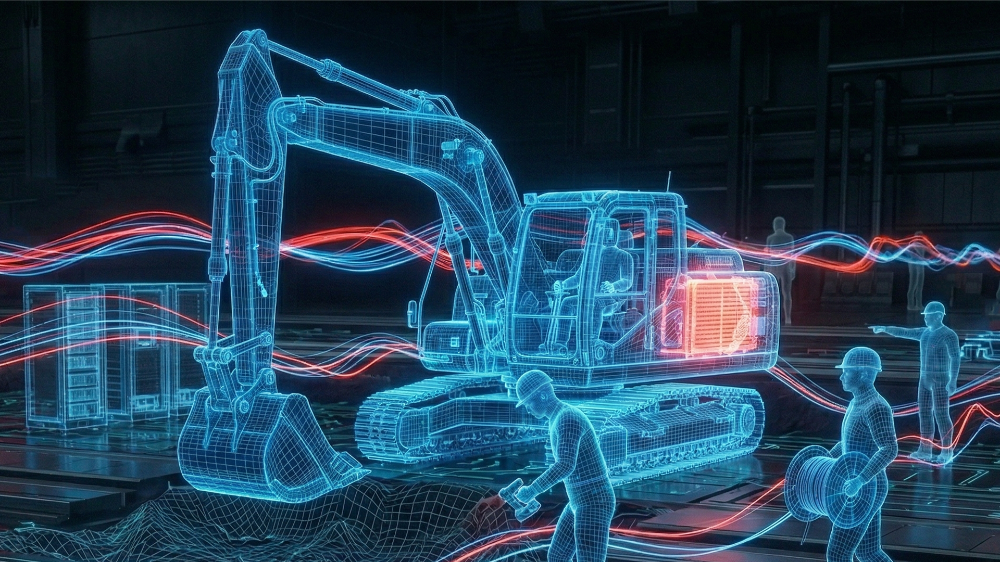
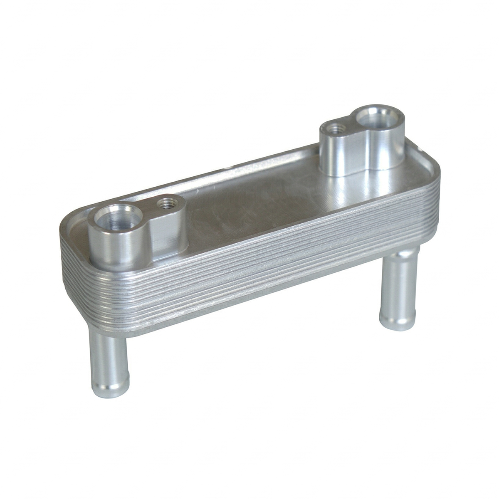
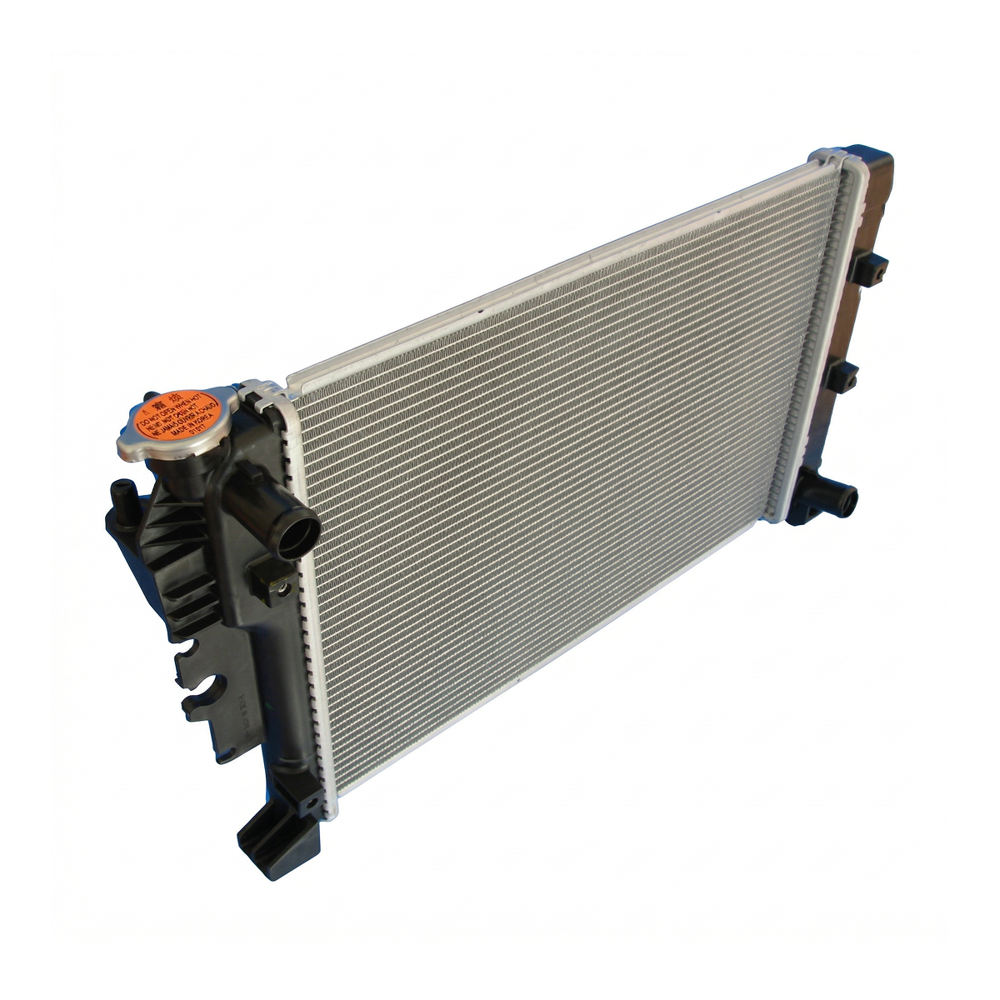
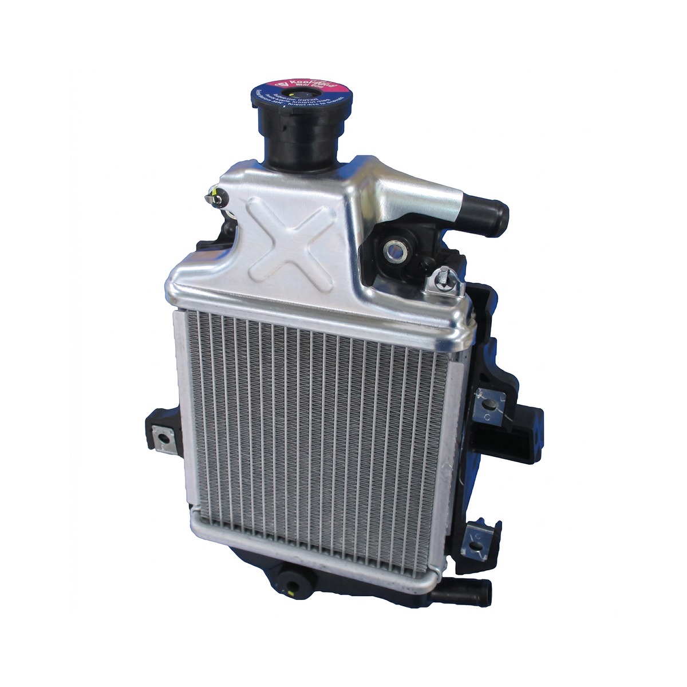
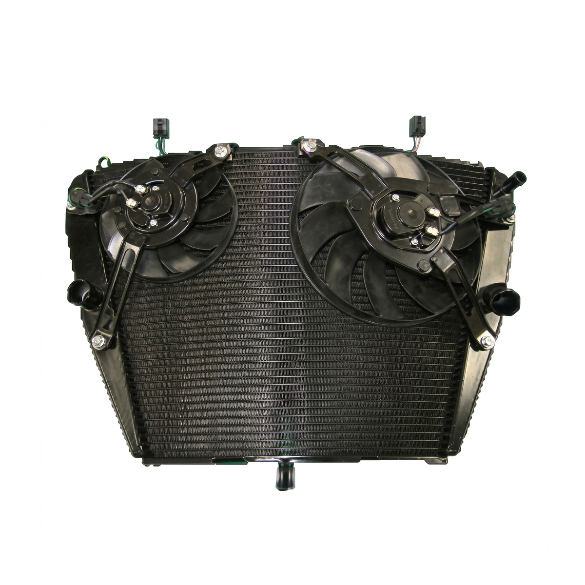
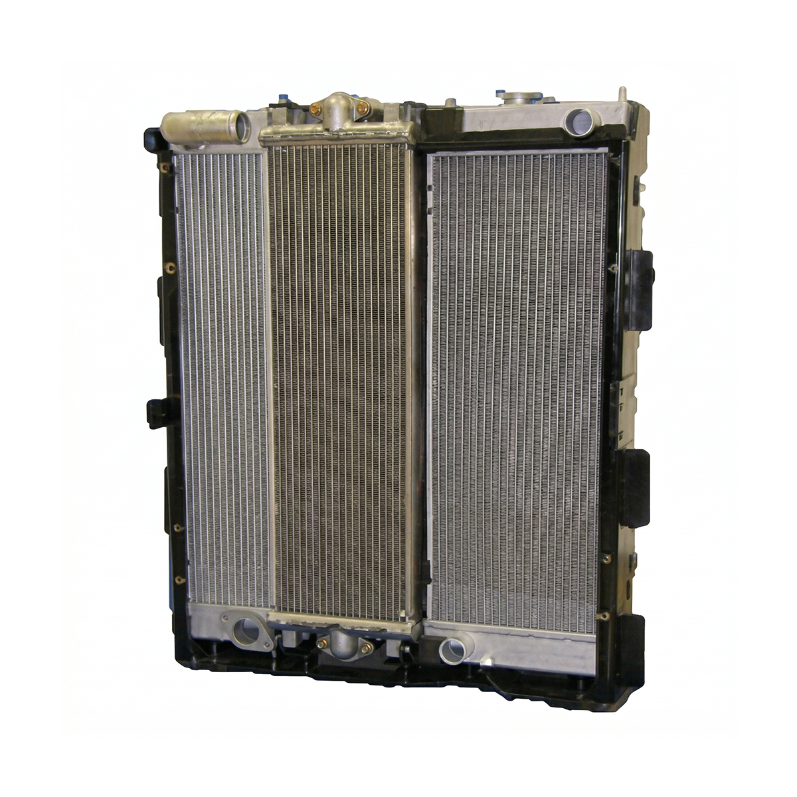
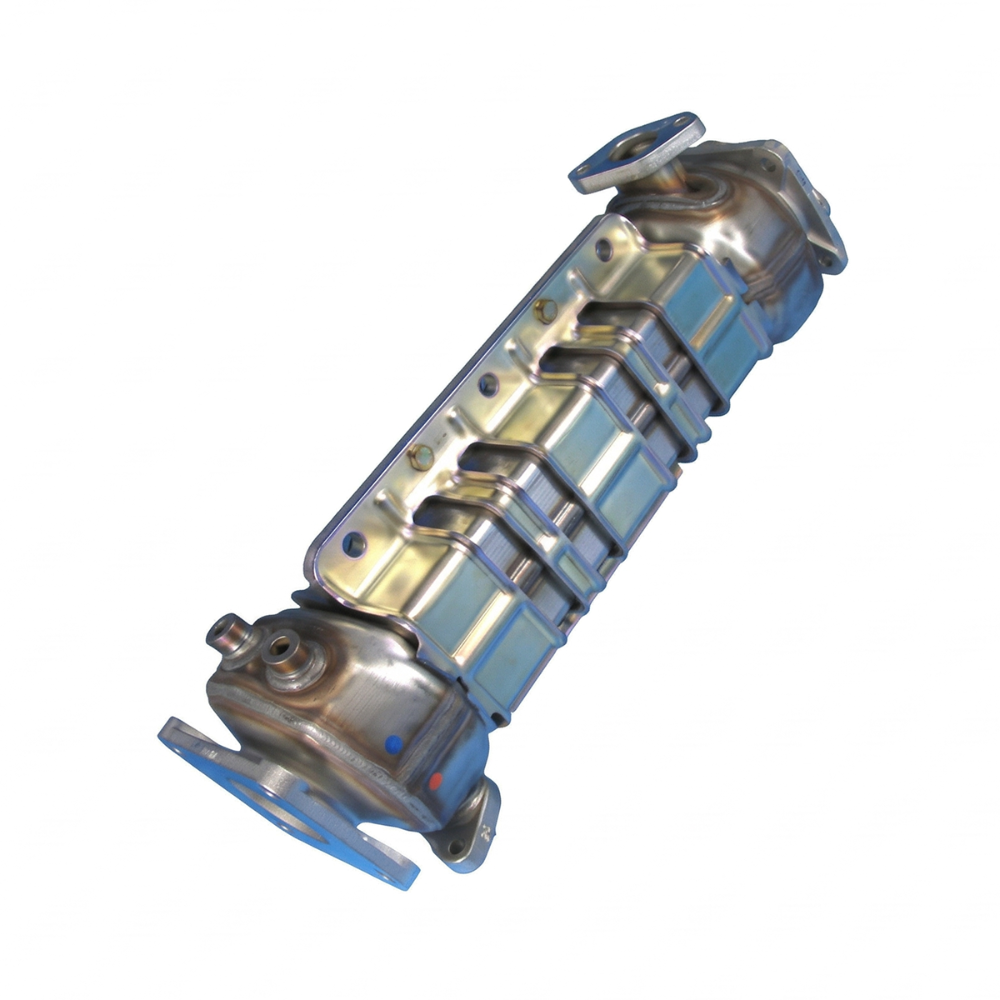

パソコンが熱でフリーズするように、どんな機械も熱を持てば動きを止めます。自動車、自動二輪車、建設・産業機械など、動く場所には必ず「熱」が生まれます。
そこで働くのが、ティラドの「熱交換器」です。熱を奪い、適温に戻すことで、機械の能力を最大限に引き出し、世界のインフラを支え続けています。
創業から約90年、私たちは「温度」を操る専業メーカーとして、熱のある場所に最適な技術を届けます。









電気の時代も、ティラドの出番は増えていく。
世界はEVやハイブリッドなどを使い分ける「マルチパスウェイ」の時代へ突入しています。
実は、エンジンとモーターを持つハイブリッド車こそ最も多くの熱交換器を必要とします。電動化は、私たちにとって需要が増える「追い風」です。
独立系専業メーカーとしての技術と戦略で、2030年の飛躍を確かなものにします。

自社開発設備とデジタル技術を融合。

設計から生産、評価まで一貫した体制をグローバルに展開。地域に根ざした迅速な対応を可能にします。

AIやIoTを駆使したデータ駆動型の生産ライン。品質向上とロス削減を極限まで追求しています。
熱い情熱で、地球を涼しく。

機械が動くときに生まれる「熱」を制御し、エネルギーの無駄とCO2を削減します。
ティラドの熱交換器は、地球を守る「環境装置」でもあります。エコカーを支える「製品」、AIやDXで生産ロスをなくす「ものづくり」、環境負荷を下げる「物流」。
3つの領域での脱炭素活動を通じ、持続可能な社会と産業の発展を両立させます。